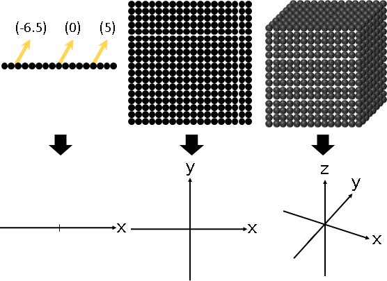
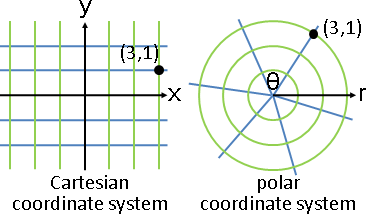
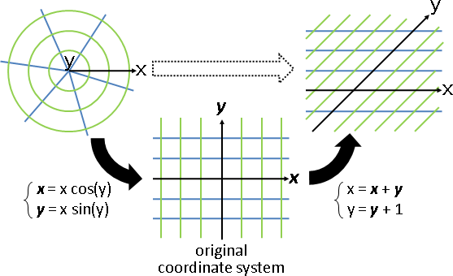
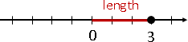
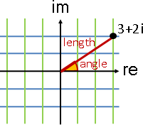

Euclidean Space Coordinate
歐氏空間的直角座標系（Cartesian Coordinate System）
大家熟知的一維數線、二維平面、三維空間，都是歐氏空間。
大家熟知的直角座標系，其實是歐氏空間的其中一種座標系。
歐氏空間的點，無限多、無限小、無限綿密，不易製圖。製圖時，不會畫點，而是意思意思畫座標軸。
歐氏空間的其他經典的座標系
tuple的每個欄位，設定成長度、角度。
Cartesian coordinate system 直角座標系 長度、…… 任意維
polar coordinate system 極座標系 長度、角度 二維
spherical coordinate system 球座標系 長度、角度、角度 三維
cylindrical coordinate system 圓柱座標系 長度、長度、角度 三維

製圖時，畫格線，容易辨認座標系。
UVa 12323
座標系寫成函數組
以直角座標系當作預設座標系，各種座標系得以寫成函數組。一個函數求得一個維度的座標。
函數組是一對一函數：不同地點擁有不同座標。函數組是連續函數：相鄰地點擁有相鄰座標。函數組的輸入變數與輸出變數一樣多：座標欄位數量符合維度大小。

更換座標系（Coordinate System Transformation）
拆成兩步驟：先套用舊座標系的反函數組、再套用新座標系的函數組。
數學當中，更換座標系是重新貼標籤，不會改變點。計算學當中，更換座標系是變換，用來改變數據。
實數數線（Real Line）、複數平面（Complex Plane）
方才談了幾何變數字，這邊補充一下數字變幾何。
數字變幾何之後，數字獲得長度、角度，可用於解決新問題。
實數變點：彷彿直角座標系。
實數 ⇨ 點 實數長度 ⇨ 點到原點的距離 實數加法 ⇨ 點的直角座標相加（平移） 實數乘法 ⇨ 點的長度相乘（縮放）、點的方位負負得正（鏡射）
複數變點：彷彿直角座標系、極座標系兩者合體。
複數 ⇨ 點 複數長度 ⇨ 從原點出發的直線距離 複數角度 ⇨ 從實軸出發的逆時針夾角 複數加法 ⇨ 點的直角座標相加（平移） 複數乘法 ⇨ 點的長度相乘（縮放）、點的角度相加（旋轉）
複數乘法變點的長度相乘、角度相加，使之循環繞圈，這是古人一致推薦的方式。由於很好用，從此沒有採用其他方式。
UVa 10378
延伸閱讀：利用加權平均值創造座標系
請見本站文件「Weighted Average Coordinates」。